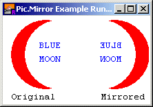

Pic.Mirror (picID : int) : int
Pic.Mirror is used to create a new picture by flipping the picture horizontally. The resulting picture is exactly the same size as the original, except it appears as a “mirror image”.
Note that the mirror-imaged picture is a newly created picture. When it is no longer needed, its memory should be released by using Pic.Free.
The program draws a crescent on the screen, takes a picture of it and then creates a second picture by mirror-imaging the crescent. It then draws both the original picture and the mirror-imaged version.

Output from the Program
View.Set ("graphics:210;125,nobuttonbar")
% Get the original picture
var pic, newPic : int
Draw.FillOval (50, 50, 50, 50, brightred)
Draw.FillOval (70, 50, 50, 50, colorbg)
Draw.Text ("BLUE", 40, 60, defFontID, brightblue)
Draw.Text ("MOON", 40, 40, defFontID, brightblue)
pic := Pic.New (0, 0, 100, 100)
newPic := Pic. Mirror (pic)
cls
% Draw the two images: original and flipped
Pic.Draw (pic, 10, 20, picCopy)
Draw.Text ("Original", 10, 5, defFontID, black)
Pic.Draw (newPic, 110, 20, picCopy)
Draw.Text ("Flipped", 140, 5, defFontID, black)
Exported qualified.
This means that you can only call the function by calling Pic.Mirror, not by calling Mirror.